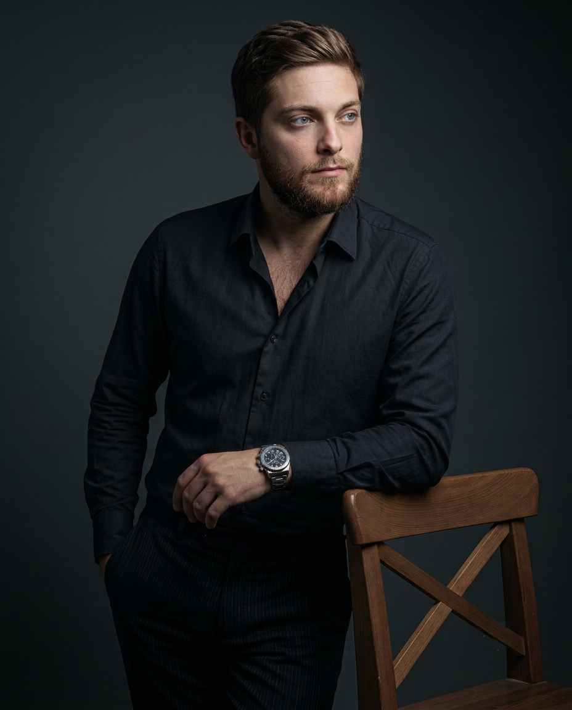

IanGrinbank
Analista de Marketing • Content Creator • Edición de video
¿Tenés clips guardados que podrían servir, pero todavía no tienen forma? Puedo revisar el material, elegir lo que suma y armar un video con un recorrido claro, pensado para el lugar donde lo vas a publicar.

01 Perfil profesional
Perfil
Marketing que entiende cómo se mueve el contenido.
Analista de Marketing
Estrategia antes de publicar.
Conecto los objetivos de la marca con un calendario y una dirección de contenidos. Primero entiendo qué necesita comunicar y después defino el canal y el enfoque.
La mirada comercial y la producción trabajan juntas para que cada publicación sostenga el tono de la marca y tenga una función concreta.
Marcas
Contextos distintos, una dirección clara.
Estrategia y contenido adaptados a la identidad, el público y los canales de cada marca.
Trabajos
Siete piezas pensadas para su contexto.
Cada video responde a una necesidad concreta de comunicación, desde grandes formatos hasta contenido de producto para redes.
Servicios
Contenido que acompaña objetivos reales.
Desde la idea inicial hasta las adaptaciones finales para cada canal.
Soluciones integrales
Tecnología, equipamiento y contenido trabajando juntos.
Una inversión tecnológica cobra valor cuando el equipamiento, la instalación y el contenido responden a un mismo objetivo.
Acompaño el proceso desde la definición de la necesidad y la coordinación con proveedores hasta el formato y la pieza audiovisual que va a funcionar en ese espacio.
Conversar por WhatsApp- 01EntenderNecesidad y contexto
- 02PlanificarEquipamiento y proveedores
- 03CoordinarInstalación y puesta en marcha
- 04ProducirContenido listo para reproducir
Contacto
Una buena pieza empieza con una conversación clara.
Elegí el punto de partida que más se acerque a tu proyecto. El mensaje se prepara automáticamente para que puedas contar el contexto sin empezar de cero.
01 ¿Qué necesitás poner en marcha?